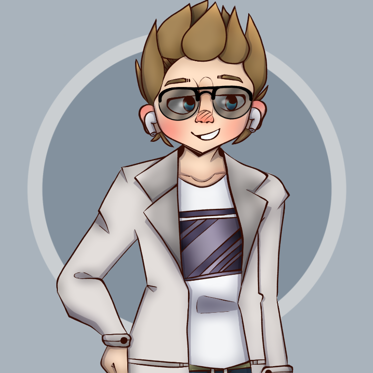

<!DOCTYPE html>
<html lang="en" id="top" class="fontawesome-i2svg-active fontawesome-i2svg-complete">

</html>

<head>
    <meta charset="utf-8">
    <meta name="viewport" content="width=device-width">
    <title>cornhub</title>
    <link href="" rel="icon">
    <!-- JQuery -->
    <script src="https://code.jquery.com/jquery-3.4.1.js"
        integrity="sha256-WpOohJOqMqqyKL9FccASB9O0KwACQJpFTUBLTYOVvVU=" crossorigin="anonymous"></script>
    <!-- jsCookie -->
    <script src="https://cdn.jsdelivr.net/npm/js-cookie@beta/dist/js.cookie.min.js"></script>
    <!-- Bootstrap -->
    <link rel="stylesheet" href="https://cdnjs.cloudflare.com/ajax/libs/twitter-bootstrap/4.4.1/css/bootstrap.min.css">
    <!-- Personal CSS -->
    <link href="css/style.css" rel="stylesheet" type="text/css">
    <!-- Icon Kit from Font Awesome -->
    <script src="https://kit.fontawesome.com/32cc714e85.js" crossorigin="anonymous"></script>
</head>

<body data-spy="scroll" data-target="#navbar" data-offset="10" onload="javasctipt:initHaptics()">
    <nav id="navbar" class="navbar navbar-expand-lg shadow fixed-top">
        
        <ul class="nav" style="position: absolute">
            <li class="nav-item">
                <a class="nav-link " href="#top">
                    <i class="fa fa-home" id="navbar-home"></i>
                </a>
            </li>
            <li class="nav-item">
                <a class="nav-link" href="#twitch" ondblclick="window.open('https://www.twitch.com/itsfoodlive')">
                    <i class="fa fa-twitch" id="navbar-twitch"></i>
                </a>
            </li>
            <li class="nav-item">
                <a class="nav-link" href="#youtube"
                    ondblclick="window.open('https://www.youtube.com/channel/UCKGQCgPYx30GKtWlYYuQzdg')">
                    <i class="fa fa-youtube" id="navbar-youtube"></i>
                </a>
            </li>
            <li class="nav-item">
                <a class="nav-link" href="#discord" ondblclick="window.open('https://discord.gg/P7KDmDk')">
                    <i class="fab fa-discord" id="navbar-discord"></i>
                </a>
            </li>
        </ul>
    </nav>
    <main class="container">
        <div class="d-lg-flex justify-content-lg-center mt-5 pt-5">
            <div class="jumbotron w-100 shadow theme-control">
                
                <h1>itsfood</h1>
                <p class="lead">yeah there is a website</p>
            </div>
        </div>
        <div class="alert alert-info shadow mb-2">
            <strong>Info!</strong> If you have come accross this website, it is still in development! There are some
            hidden features, you should go find them!
        </div>
        <div class="mt-3 card shadow theme-control">
            <div class="card-body">
                <h3 class="mb-0">Hi, my name is itsfood. And this is my website.</h3><br>
                <p>I'm a Twitch Streamer and a YouTuber, and I like to make gaming videos spiced up with comedy! (Add
                    info?)</p>
            </div>
        </div>
        <div id="twitch" style="height: 4rem;"></div>
        <div class="card shadow theme-control">
            <div class="card-header">
                <h3><i class="fa fa-twitch"></i> Twitch</h3>
            </div>
            <div class="card-body embedHolder">
                <iframe src="https://player.twitch.tv/?channel=itsfoodlive&parent=itsfood.github.io" height="100%"
                    width="100%" frameborder="false" scrolling="false" allowfullscreen="true"
                    style="border-radius: 5px;">
                </iframe>
            </div>
            <div class="card-body">
                <p>Currently I have no schedule on my Twitch, as my life doesn't allow for it. I try to stream
                    often,
                    however sometimes other things take priority. In a few years, I plan for my life to finally
                    allow me
                    to have a good schedule set up for my Twitch.</p>
            </div>
            <div class="card-footer">
                <a href="https://www.twitch.tv/itsfoodlive" target="_blank" class="btn btn-twitch"
                    onmousedown="javascript:fillHeartT()">
                    <i class="fa fa-heart-o" id="heartot"></i><i class="fas fa-heart invisible pulse" id="heartt"></i>
                    Follow
                    on Twitch
                </a>
            </div>
            <script type="text/javascript">
                function fillHeartT() {
                    $('#heartot').addClass('invisible');
                    $('#heartt').removeClass('invisible');
                }
            </script>
        </div>
        <div id="youtube" style="height: 4rem;"></div>
        <div class="card shadow theme-control">
            <div class="card-header">
                <h3><i class="fa fa-youtube"></i> YouTube</h3>
            </div>
            <div class="card-body embedHolder">
                <iframe src="https://www.youtube.com/embed/bAFVtqJx9kc" height="100%" width="100%" frameborder="false"
                    scrolling="false" allowfullscreen="true" style="border-radius: 5px;">
                </iframe>
            </div>
            <div class="card-body">
                <p>My YouTube Channel should have a video at least once a month, that is what I try to do. If there
                    isn't a video out for that month, there is probably a reason why and you can learn why in my <a
                        href="https://discord.gg/P7KDmDk" target="_blank"><i class="fab fa-discord"></i> Discord
                        Server</a></p>
            </div>
            <div class="card-footer">
                <a href="https://www.twitch.tv/itsfoodlive" target="_blank" class="btn btn-youtube"
                    onmousedown="javascript:fillHeartYT()">
                    <i class="fa fa-heart-o" id="heartoyt"></i><i class="fas fa-heart invisible pulse" id="heartyt"></i>
                    Subscribe on YouTube
                </a>
            </div>
            <script type="text/javascript">
                function fillHeartYT() {
                    $('#heartoyt').addClass('invisible');
                    $('#heartyt').removeClass('invisible');
                }
            </script>
        </div>
        <div id="discord" style="height: 4rem;"></div>
        <div class="card shadow theme-control">
            <div class="card-header">
                <h3><i class="fab fa-discord"></i> Discord</h3>
            </div>
            <div class="card-body embedHolder">
                <p>Join my Discord Server to get updates on when I go live, post a new video, and other
                    announcements I
                    might make, such as why there won't be a video that month. </p>

            </div>
            <div class="card-footer">
                <a href="https://discord.gg/P7KDmDk" target="_blank" class="btn btn-discord">
                    <i class="fab fa-discord" id="heartoyt"></i> Join the Server
                </a>
            </div>
        </div>
        <div style="height: 4rem;"></div>
    </main>
    <div class="containter">
        <div class="d-flex justify-content-around" style="font-size: smaller;">
            <p class="text-muted"><i class="fa fa-github"></i> Published on GitHub</p>
            <p class="text-muted"><i class="fab fa-creative-commons-by"></i> Made by itsfood</p>
        </div>
        <div class="d-flex justify-content-around" style="font-size: small;">
            <p class="text-muted"><i class="fas fa-adjust"></i> To switch themes, change your browser or device
                settings.</p>
        </div>
        <div class="d-flex justify-content-around" style="font-size: small;">
            <p class="text-muted"><i class="fab fa-safari" title="iOS and MacOS Safari"></i> <i class="fab fa-chrome"
                    title="Google Chrome"></i> Works On <i class="fab fa-edge" title="Microsoft Edge"></i> <i
                    class="fab fa-firefox" title="Mozilla Firefox"></i></p>
        </div>
    </div>


    <script type="text/javascript" id="haptics">
        // Current Vibration Patterm
        var curVibe = 0;
        // timer event
        var tmint;
        // initHaptics() must be called from the on loading of the web page
        function initHaptics() {
            // Listen for touchmove and touchend.
            document.body.addEventListener("touchmove", buzzPos, false);
            document.body.addEventListener("touchend", buzzStop, false);
            // Set a timer event, in this case firing every 150 msec, to repeat
            // current vibration pattern. You should adjust this interval to 
            // correspond the vibration pattern durations you use.
            tmint = window.setInterval(buzzTime, 150);
        }

        function buzzTime() {
            // vibrate at the end of each defined time interval
            window.navigator.vibrate(curVibe);
        }

        function buzzPos(event) {
            // This makes vibration work in Chrome Beta for Android (although it can cause other issues).
            event.preventDefault();
            // Find the element where the touch occurs.
            e = document.elementFromPoint(event.touches.item(0).clientX, event.touches.item(0).clientY);
            curVibe = 0;
            // Use the following if statements to assign vibration events based on element ID. 
            // You can alternatively look for element names or class names.
            if (e.id == "f1") {
                curVibe = 100;
                window.navigator.vibrate(curVibe);
            }
            if (e.id == "li") {
                curVibe = 50;
                window.navigator.vibrate(curVibe);
            }
        }

        function buzzStop() {
            // This makes vibration work in Chrome Beta for Android (although it can cause other issues).
            event.preventDefault();
            // Stop vibration.
            window.navigator.vibrate(0);
            curVibe = 0;
        }
    </script>
    <!--jQuery CDN -->
    <script src="https://cdnjs.cloudflare.com/ajax/libs/jquery/3.4.1/jquery.js"></script>
    <script src="https://cdnjs.cloudflare.com/ajax/libs/twitter-bootstrap/4.4.1/js/bootstrap.js"></script>
</body>

</html>